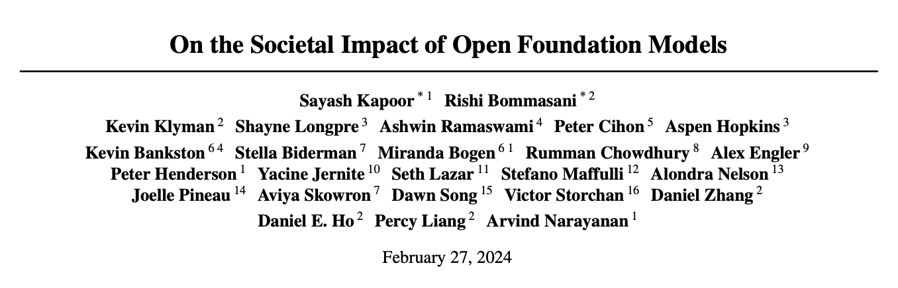
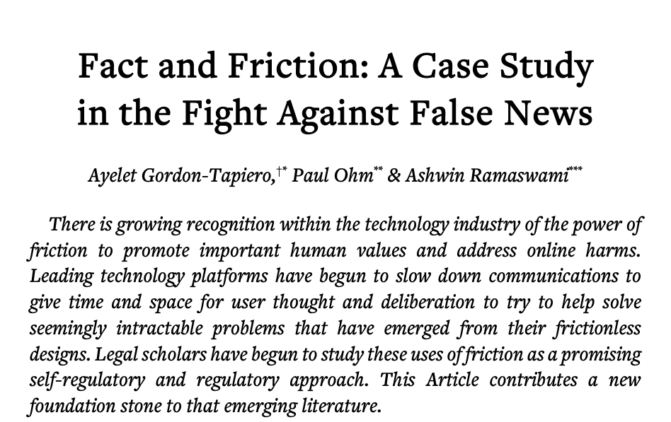
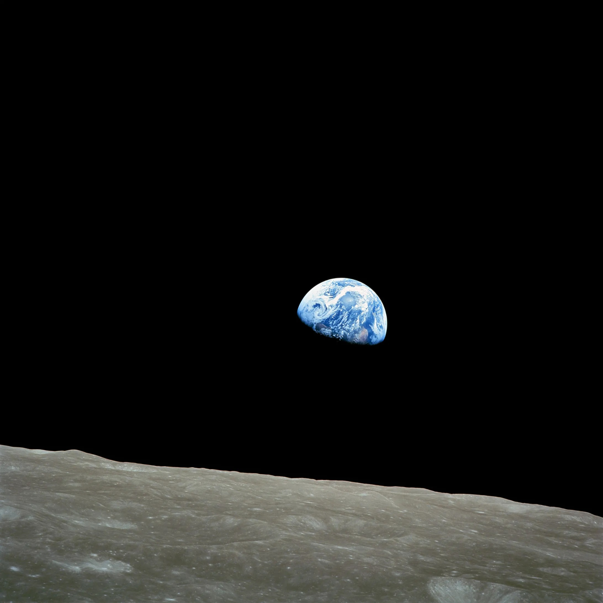
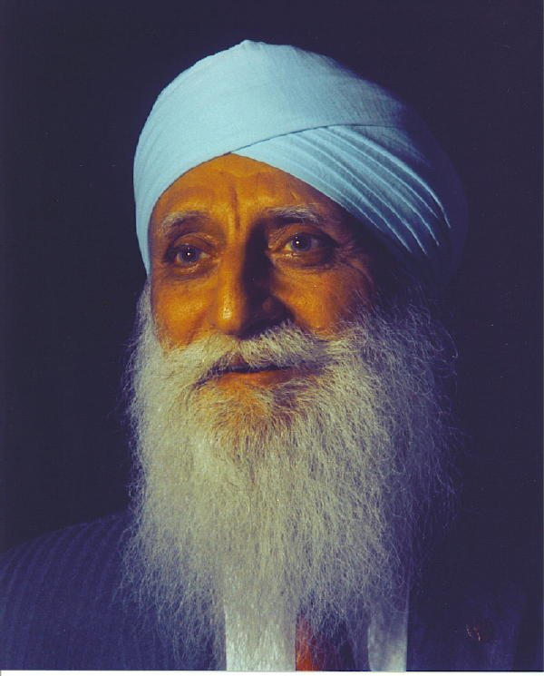

Ashwin
Ramaswami
Member of Technical Staff at Cognition, which acquired my startup Corridor. Engineer, lawyer, and former candidate for Georgia State Senate.


Settlement in the multistate litigation against Meta over child safety, which I worked on at the Georgia AG’s office.

In 2024, I ran for Georgia State Senate in my hometown of Johns Creek (NYT). From 2020-2023, I worked at the Cybersecurity and Infrastructure Security Agency (CISA), where we built Crossfeed to help states secure their elections.

I've long been an open source software developer, maintaining react-jsonschema-form (with many other people's help!) since 2019. In 2022, I ran a grants program at Schmidt Futures to support OSS security in the wake of Log4Shell. We funded Ecosyste.ms, the Atlantic Council, OTF, and D//F.
I hold a B.S. in computer science from Stanford University. At Stanford, I was the first CTO of the Stanford Daily; organized TreeHacks; and worked on CodaLab, The Grand Tour Project, Stanford Internet Observatory, Immigration Policy Lab, and CRFM. I built software at early stage startups including Skiff, Nooks, Pulsar, Eventive, Maple Finance, and Caldera. Later, I worked at Sequoia Capital as a tech law and policy fellow in Washington, D.C.
I also hold a J.D. from Georgetown University Law Center, where I helped start the Judicial Innovation Fellowship; helped establish an endowment for Dharmic Life; and worked at the Wikimedia Foundation and ICAP. In 2023, I worked in the Georgia Attorney General's Consumer Protection Division through an ABA Steiger Fellowship, where I worked on the multistate litigation against Meta over child safety (which led to a $17.1 billion settlement in 2026).
Before my undergraduate studies, I spent much time helping my high school build one of the top quizbowl teams in the country. I also attended Georgia Tech for a year through Georgia's excellent Dual Enrollment program.
You can reach me at ashwin@corridor.dev or aramaswamis@gmail.com.
Writing






 Mahler Symphony No. 2 "Resurrection"Conducted by Leonard Bernstein
Mahler Symphony No. 2 "Resurrection"Conducted by Leonard Bernstein The PancatantraTranslated by Patrick Olivelle
The PancatantraTranslated by Patrick Olivelle Castle in the SkyDirected by Hayao Miyazaki
Castle in the SkyDirected by Hayao Miyazaki Zhuangzi: The Essential WritingsTranslated by Brook Ziporyn
Zhuangzi: The Essential WritingsTranslated by Brook Ziporyn